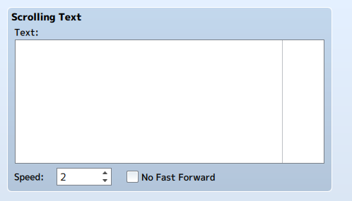

事件类型
可以在场景生成器中创建各种事件。
*基本上所有事件都与mv兼容。
显示图片事件
显示图片事件的事件长度可以设置，最低设置为一帧。这些图像被设定为与mv图像相关的事件，可以移动或随时间改变其色调。
图片
显示图像的设置。
- 编号
- 图片编号。数字越高，堆叠时放置的位置就越高。当两个图片编号相同时，将优先使用下一行的图片编号。
- 图片
- 选择要显示的图片。
开始位置
此设置用于图片的初始显示位置。
- 原点
- 选择图片转换或旋转时的中心位置。
- X: Y: 宽度 高度:
- 设置图片的位置和大小。
- 旋转速度
- 设置图片旋转的速率。
开始混合
设置图片的开始时间组合。
- 不透明度
- 配置图片的不透明度。
- 混合模式
- 指定重叠图片的组合方法。
结束位置
设置图片显示在结束时间的位置。
- X:Y:宽度：高度：
- 设置图片的位置和大小。
结束混合
设置图片结束时的显示组合方法。
- 不透明性
- 配置图片的不透明度。
色调
设置图片结束时显示的色调。
显示文本事件
无法设置显示文本事件的长度。此外，在同一帧中不能显示多个文本项。如果多个帧设置为同一帧，则较低的帧将优先。

消息
- 脸图
- 设置要在文本窗口中显示的脸图。
- 文本
- 输入事件期间要显示的文本。在随后的事件中，将继续显示四行以上的文本。
- 背景
- 设置窗口的背景。
- 窗口位置
- 设置窗口位置。
显示滚动文本事件
无法设置显示滚动文本事件的长度。此外，在同一帧中不能显示多个文本项。如果将多个文本设置为同一帧，则下一行的文本将优先。可以使用所有控制字符。

滚动文本
- 文本
- 输入要滚动显示的文本。
- 速度
- 设置滚动速度。
- 无快进
- 如果选中此项，则不能使用按键在滚动文本中快进。
淡入淡出屏幕事件
设置淡入淡出事件。淡入淡出屏幕事件的长度固定为24帧。在执行淡入之前必须执行淡出。

渐变类型
- 渐变类型
- 设置所选事件是淡出还是淡入。
屏幕事件
添加对图片有影响的事件。从两种类型中选择：闪光或震动。

闪光颜色
检查这将导致闪光效应发生。可以设置色调和强度。
震动
检查此项将导致发生震动事件。可以设置强度和速度。
音频事件
设置音频事件。无法设置音频事件的长度。此外，不能同时发生多个音频事件。

音频
- 音频类型
- 选择音频类型。
- 音频 选择声源文件。
淡出音频事件
添加音频淡出效果。淡出时间由帧的长度设置。.
音频类型
- 音频类型
- 指定淡出音频的类型。
标记
在时间线上设置一个标记。单击标记可以添加注释。

预设
预设是预先放在一起的场景数据。当预设场景使用图像或音频材料时，文件将被复制并覆盖到项目文件夹中。